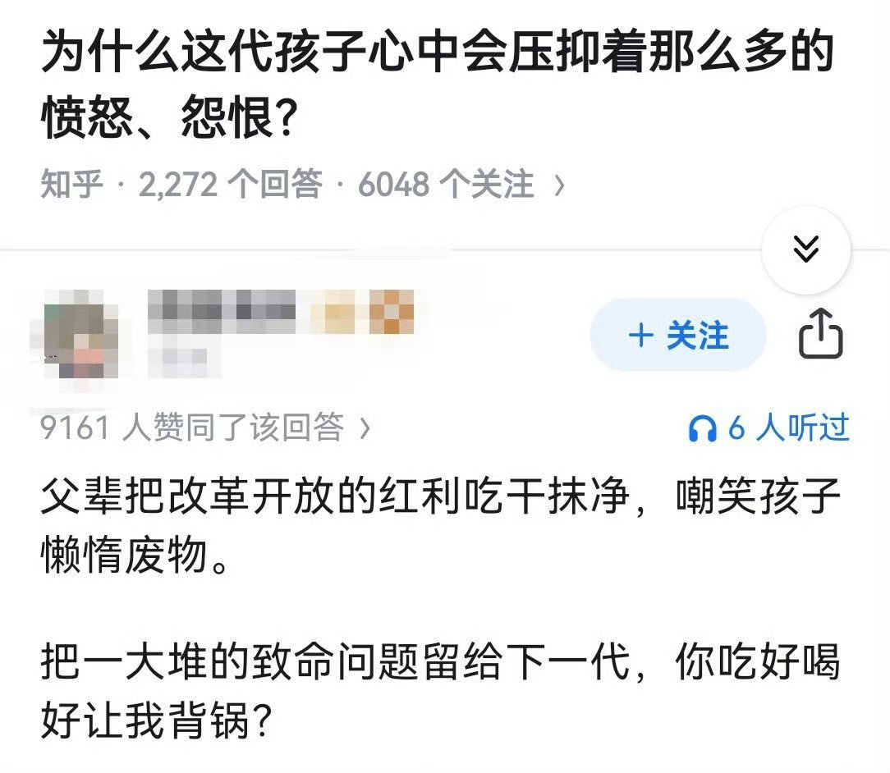

The Raven in the Rain🏳️🌈
@Raincandy_1937
RT @bright_hawkins: 2015年，中国房地产互联网经济最如火如茶（我就爱这么念）的时候，我负责某门户网的官微运营。
我眼看着15岁的孩子在评论里说“就当共产党的脑残粉”，我亲眼数着高晓松、易中天、潘石屹被打倒。
我亲见到孩子们高呼“基建狂魔、祖流放、国企万…

落日海盗
@bright_hawkins
2015年，中国房地产互联网经济最如火如茶（我就爱这么念）的时候，我负责某门户网的官微运营。
我眼看着15岁的孩子在评论里说“就当共产党的脑残粉”，我亲眼数着高晓松、易中天、潘石屹被打倒。
我亲见到孩子们高呼“基建狂魔、祖流放、国企万岁”……
这盛世如你们这些孩子所愿，你们咋还不高兴了呢？ https://t.co/bzu7cfxJ5c